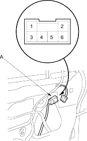
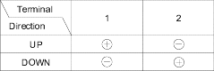

- Remove the door panel (see page 20-7).
- Disconnect the 6P connector (A) from the driver's window motor (B).
Terminal side of male terminals

- Test the motor in each direction by connecting battery power and ground according to the table. When the motor stops running, disconnect one lead immediately.

- If the motor does not run or fails to run smoothly, replace it.
- Turn the ignition switch ON (II).
- Move the driver's window up with the driver's switch Manual UP.
- Hold the top of window glass with hands while the window moving up.
- Move the driver's window up with the driver's switch Manual UP.
Does the window move down immediately?
YES – The driver's window motor is OK. 
NO – Go to step 5.
- Check for continuity between the driver's window motor No. 3 terminal and the master switch No. 13 terminal and the driver's window motor No. 4 terminal and the master switch No. 9 (RHD type: No. 1) terminal.
Is there continuity?
YES – Go to step 6.
NO – An open in the wire.
- Check for continuity between the driver's window motor No. 5 terminal and power window master switch No. 20 terminal and the driver's window motor No. 6 terminal and the master switch No. 16 terminal.
Is there continuity?
YES – Go to step 7.
NO – An open in the wire.
- Substitute a known-good power window master switch and recheck from step 3.
Does the window move down immediately?
YES – Replace the power window master switch.
NO – Replace the driver's window motor.